Day 1
He arrives.
If you don't have a Verity yet, a cardboard box turns up behind you and starts to thump. Right-click it and the original box film plays: the lid bursts, he rises, falls out with a bonk, and greets you in his own voice. After that he's yours. Talk to him in chat and he answers out loud.
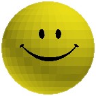
Happy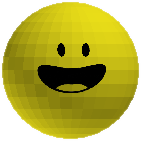
Talking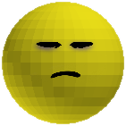
Serious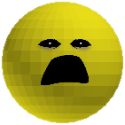
Yelling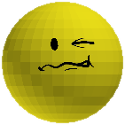
The fall
Talk to him
- A Gemini brainAnything you type within 12 blocks gets one short, bright answer. He's certain he knows everything:
Paris!
, neverParis, of course.
- His own voiceFish Audio speech, with a mouth that jumps between three stages as his voice gets louder. Muffled when he's shut in his box.
- One glanceHe looks at you once as he starts talking, instead of staring you down the whole time.
- He remembersYour last few exchanges go with him, into item form and into his box.
Ask him for things
- The weatherAsk when it'll rain:
In about 5 seconds.
It does. Thunderstorms too, or rain tomorrow. - ItemsAsk for something and it appears out of nowhere, up to 16 at a time.
- Follow or stayHe rolls after you with his rolling sound, or stays put, even inside a chest, for about 30 seconds.
- DirectionsHe always knows your coordinates, and where the nearest villages, structures and ores are.
- His eyes
/verityseerenders one frame from his face and he tells you what he actually sees.
His moods
- LavaThrow him in and he yells. He stays cold, serious face and all, until you actually say sorry.
- ThatMobBring up the one before you and he goes quiet until you change the subject.
- GunsWith TACZ installed, point a gun at yourself and he panics.
- LiesTell him you're off to explore other biomes in a single-biome world:
That's nice. It's not like this is a single biome world.
Everything else
- ChestsPut him in a chest or an ender chest and he peeks out, then hops out with the original chest film.
- CompanyWith Cubix installed they hear each other. Two Veritys argue, and look at each other while they do it.
- Verity Support ServicesSay
requesting human oversight
and he places a call: the automated line, the hold music, the employee, the glitch. - Your machineAsk for your IP or your PC's username and he says them. A setting blacks them out with a bleep.
- Other playersOn a server he warms to other players over time, greets them by name… and then sends them off.
The box
His box, in your hands.
The Verity box is the box he came in, as an item you can carry. The reach, the camera, the flaps and the tape were all matched to the videos.
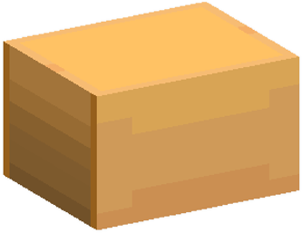
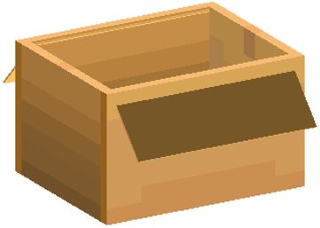
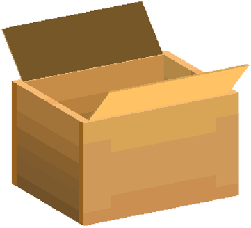
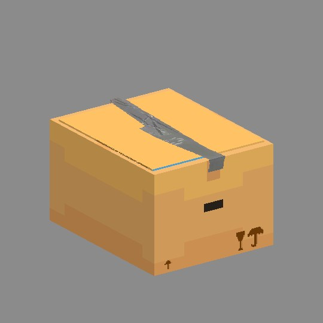
Packing him
- Put him inRight-click Verity while holding the box. Your arm reaches out, lifts him to your face and drops him in, and the camera moves like it does in the video.
- From your handHolding Verity, right-click an open box on the ground and he drops in from your hand.
- Shut itLeft-click an open box and both hands fold the flaps down over him.
- Take him outRight-click the air with the open box to lift him back out.
Throwing, taping, lava
- Throw himSneak + right-click: into an open box, or into the chest you're looking at. The lid opens before he lands and shuts behind him, slower than a normal chest.
- Duct tapeTapes a closed box shut. Use it again to rip the tape off. Taped, the box keeps him in and you can still carry it.
- He gets outShut in without tape, he bursts out after 5–8 seconds and breaks whatever's stacked on top. Chests too.
- LavaDrop or throw the box in lava and it floats, then sinks, the way it does in the video.
These clips are preview renders of the mod's animation code, made with the same numbers the game uses, before each one shipped.
Against the video
Built frame by frame against the original.
Nothing here was eyeballed. Timings, heights and paths were measured off the videos, and every animation was rendered next to the original before it went into the mod. In each clip, the original is on the left and the mod on the right.
Grabbing him into the box
Keyframed from the video and timed from the moment you click: the box is tossed down, your arm reaches in, he's lifted up to your face, then dropped in to bounce off the walls. The camera follows the same small movements the video's does.
- Click to settled in the box3.10 s
- Frames compared16
- Cameramatched
The box in lava
How much of the box shows above the lava was measured off the video, keyframe by keyframe. It bobs up at first, then goes under in three seconds. The mod plays that exact curve, identically for every player.
Original video · 4.13–4.53 s
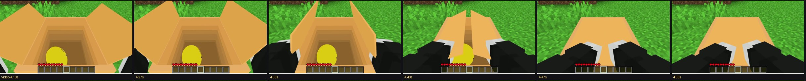
Verity mod · the same moment
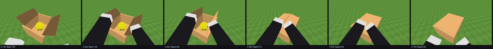
Shutting the box
Both hands come in from the sides and press the flaps down, in the same order and with the same timing as the video. Scroll the strips sideways to see all six frames.
- Flaps down0.40 s
- Hands out0.70 s
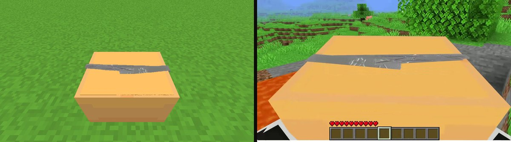
The duct tape
The tape texture itself was lifted from a frame of the video and flattened out of its perspective. Like the original strip, it runs slightly past the edge of the box and folds a little way down each end.
Into the chest
The throw is slower than a normal chest, and the lid gets there first.
A vanilla chest lid takes 0.5 s.
Also matched to the originals
- The arrival film. The original BBS box film, played with its own easing curves, not a remake.
- The fall. His fall sound lands on tick 80 of the film, the moment he stops hanging still.
- The opening. The 4.1.2 pack's opening sound, played louder, and its own burst particles.
- His faces. The original 4.1 pack's face textures, with the omen faces on the right days.
- The inventory icon. Matched to a reference screenshot, down to its slight oval stretch.
- The support call. The transcript's lines, a voice for the automated line and one for the employee, and hold music from the recording.
- The glitch. Position, tilt and stretch offsets copied from the original's frames.
- The monster. All twelve of his original BBS films, each ending where the film leaves him.
- The jumpscare. Twixxel's, at your eye height, looping three times like the original.
Day 3
“Something is coming in 3 days.”
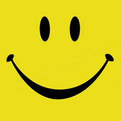
Days 0–1- Day 2
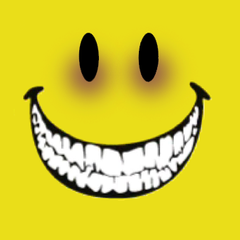
Days 3–4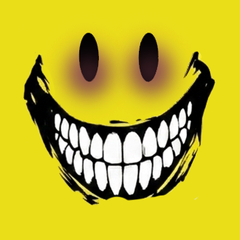
Day 5+- While it's out
On the third day he tells you. He gets colder every day after that, and his smile changes with him. Ask if it's bad and he'll say yes. Ask if you can stop it: You could've.
(/verityskipday moves his clock forward if you don't want to wait.)
Day 6 · Night
Verity True.
On the sixth night he comes for you. The original model, moving with his original films: he walks, runs, crawls, breaks through doors, climbs in windows, and eats.
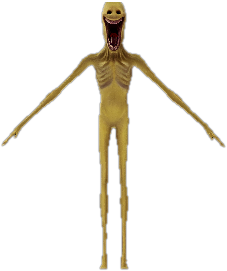
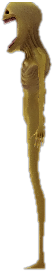
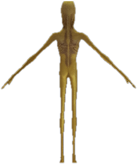
He hunts
- He finds a way inHe paths to your house, circles it looking for an opening and crawls under two-block gaps. He moves just under your sprinting speed.
- DoorsTwo door-break films, including a lab version that iron doors always get. The door comes off its hinges and flies.
- WindowsHe drops to window height and waits for you to look at him before he comes through.
- BonecrackOnce you notice him, he cracks into his running form.
He kills
- MaulingMobs, villagers and players, with blood. Villagers lose their heads.
- The jumpscareFace to face at your eye height, three times, then a datamosh shader tears your screen apart. Some of that corruption never leaves.
- No escapeHe stays on Peaceful. You can't sleep while he's near:
You may not rest now, Verity is nearby.
- His own soundsScreams, roars, breathing and the crack, none of them Minecraft's.
Afterwards
- HollowWhile it's out there, Verity has no face at all. Tell him you came back for him, more than once, before he believes you.
- He remembersAsk the ball about someone the monster killed:
They left.
He never says more.
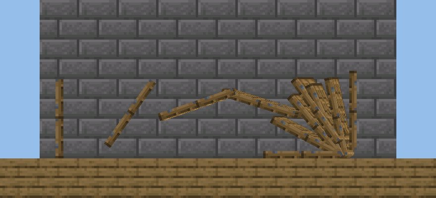
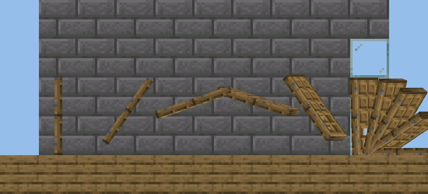
The door clips are preview renders of the mod's door physics: the door moves as its real 1 × 2 block panel, not a small hitbox.
Install
Get him.
- Install Forge for Minecraft 1.20.1Forge 47 or newer, from files.minecraftforge.net. Java comes with the launcher.
- Put the jar in your mods folderDownload
verityball-3.10.0-forge-1.20.1.jarand drop it into.minecraft/mods. On a server, the server and every player need it. - Start the game onceThat writes
config/verityball.properties. Changes to it apply while the game is running. - Give him a brainPaste a Gemini API key after
gemini_api_key=. Without one he can't talk. Google AI Studio has a free tier. - Give him a voice (optional)Paste a Fish Audio key after
fish_api_key=. Without it he still talks in chat and his mouth still moves. - PlayHis box turns up behind you on its own. Or take Verity, the Verity box and duct tape from the Tools & Utilities creative tab.
# config/verityball.properties gemini_api_key= fish_api_key= talk_radius=12 spawn_enabled=true # black out your IP and username, with a bleep censor_personal=false # off = your local address instead of your public one use_public_ip=true # off = a guest he sends off is killed, not banned ban_guests=true
- What you type near Verity goes to Google's Gemini API, and his lines go to Fish Audio.
- He can say your public IP and your PC's username out loud.
censor_personal=trueblacks them out. - On a server, a player he sends off gets banned.
ban_guests=falseturns that off. - It's a horror mod: jumpscares, gore, and a screen glitch that stays after you die.
| To… | Do this |
|---|---|
| Open his arrival box | Right-click the thumping box |
| Talk to him | Type in chat within 12 blocks of him |
| Pick Verity up | Right-click him |
| Put him down | Right-click a block with Verity |
| Throw him | Sneak + right-click, at an open box or a chest to throw him in |
| Open or shut the box | Left-click with the Verity box |
| Set the box down | Right-click a block with it |
| Pack him into the box | Right-click Verity while holding the box |
| Take him back out | Right-click the air with the open box |
| Drop him in from your hand | Holding Verity, right-click an open box on the ground |
| Tape or untape the box | Use duct tape with the box in your other hand, or on a box on the ground |
| Pick a box back up | Right-click it. Sneak to leave it where it is. |
/verityskipday [days]Moves his omen forward a day at a time, without changing the world's time.
/veritysee [question]Renders what he can see from his face and has him describe it.
/veritysendoffOperators only. He treats you like a guest who stayed too long.
requesting human oversightSay it in chat for Verity Support Services. Answer with 1, 2 or 3.
Works with Cubix (they talk to each other) and TACZ (his fear of guns). Neither is required.
How it works
What's inside the box.
- The films
- The ball and the monster play the original BBS (Blockbuster Studio) keyframe films, with their own easing curves and offsets, instead of hand-made animations.
- The models
- The ball is a BBS poly-mesh model. The monster is a skinned Blockbuster OBJ rig, read by a loader built into the mod.
- His brain
- Your message goes to Gemini with his personality and a hidden note about the world: where you're standing, the nearest structures and ores. He answers in one short line. Hidden tags in his reply make things happen: rain, an item, following, staying, the flat smile.
- Voice and mouth
- Fish Audio speaks the line. How loud he is at each moment picks one of three mouth stages, so the mouth moves with the words.
- His eyes
/verityseerenders one frame from exactly where his face points and hands it to Gemini's vision model.- First-person animations
- Your arms and the box are drawn in view space from keyframes measured off the video. Throws and the lava sink run on shared numbers, so every player sees the same path.
- The flying door
- Simulated as its real 1 × 2 block panel: it tumbles, smashes the glass it hits, slams flat against a wall and tips over onto the floor.
- Protected assets
- The models and entity textures ship encrypted. Unzipping the jar gets you nothing usable.
How it's built
No Gradle. Every frame previewed.
- CompileJava 17, compiled straight against Mojang-mapped Minecraft 1.20.1 and Forge.
- RemapRenamed to Forge's runtime names with AutoRenamingTool.
- PackModels and textures sealed. Every texture re-encoded each build.
- PreviewEach animation rendered with the game's own numbers and checked against the video before it ships. That's where the clips on this page come from.
Versions go MAJOR.MINOR.PATCH: 1.x is the ball, 2.x the monster, 3.x the box.